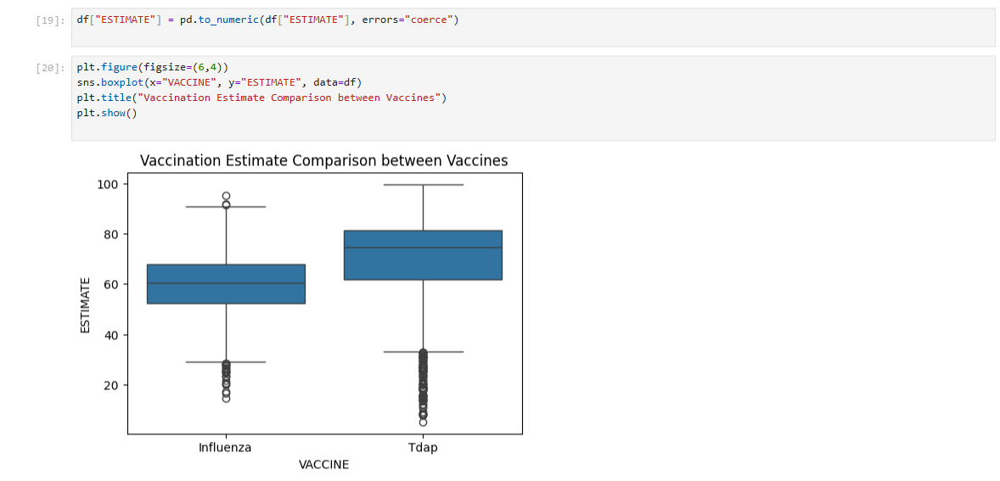
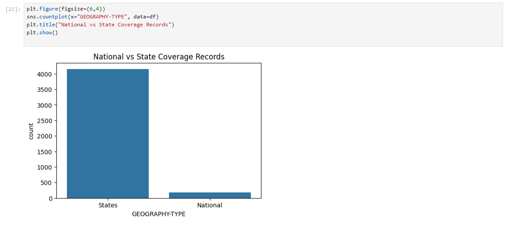
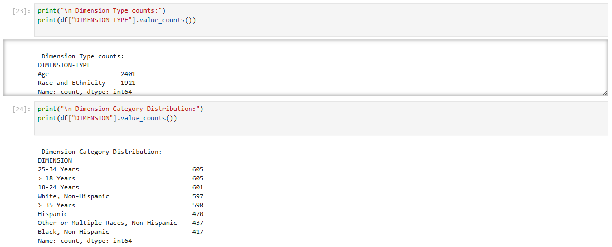
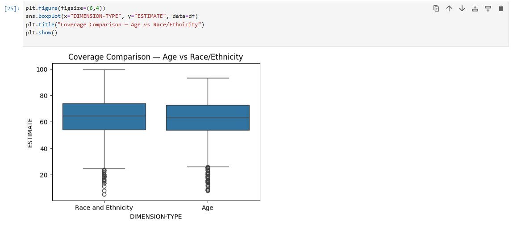
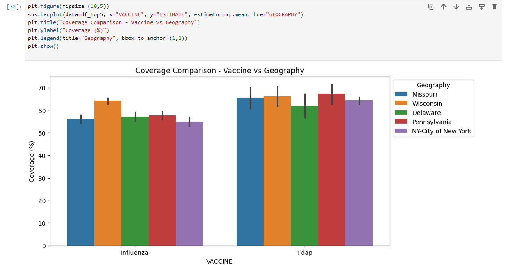

Vaccination Coverage Analysis Among Pregnant Women
Submitted by : Kavya Jalihalli Matadha
Table of Contents
1. Introduction
The purpose of this tutorial is to provide a comprehensive understanding of the different stages in the data science lifecycle.
Data science is a structured process that allows us to extract meaningful insights from data, and this tutorial focuses on four key stages:
- Data Collection
- Data Processing
- Exploratory Data Analysis and Data Visualization
- Model Analysis
- Interpretation of Results
The overall aim of this data science cycle is to collect data, identify demands and trends, conduct exploratory data analysis,
and interpret the findings. While the results of this tutorial may not be fully conclusive, the process provides a clear understanding
of how data science works in practice. It also highlights the critical role that data science plays across various sectors, including healthcare,
industries, finance, and more. Data-driven decision-making has become a cornerstone in modern industries, and understanding how to handle, analyze,
and visualize data effectively is a crucial skill for any aspiring data scientist.
For this tutorial, I have chosen a dataset from the
Centers for Disease Control and Prevention (CDC). The dataset focuses on vaccination coverage among pregnant women in the United States.
Vaccination during pregnancy is an important public health concern, as it helps protect both the mother and the baby from preventable diseases.
Analyzing this dataset allows us to understand patterns of vaccine uptake, explore disparities across different age groups and ethnicities,
and tify states or regions where coverage may be lower. These insights can help public health professionals and policymakers design
interventions to improve vaccination rates.
By working with this dataset, I aim to gain hands-on experience with real-world data. The process involves handling raw data that may contain
inconsistencies, missing values, or different formats, which is typical in practical data science projects. This tutorial demonstrates how
cleaning and preprocessing are essential to prepare the dataset for analysis, ensuring that the results are accurate and meaningful.
Additionally, performing exploratory data analysis and visualizations helps to uncover trends, patterns, and outliers that might otherwise
go unnoticed.
Beyond the technical aspects, this exercise emphasizes the importance of understanding the context of the data. In healthcare, for instance,
analyzing vaccination coverage provides actionable insights that can influence public health policies, resource allocation, and community outreach programs.
Data science is not just about building models or computing statistics; it is about deriving knowledge that can lead to real-world impact.
Through this tutorial, I also learned how data science methodologies can be applied in different sectors, illustrating the versatility and relevance of
data-driven approaches in solving practical problems.
Overall, this tutorial offers a holistic view of the data science lifecycle, from data collection to result interpretation.
Even though the outcomes of the analysis may vary or have limitations due to the dataset size, structure, or quality, the learning gained is invaluable.
It provides a foundation for further exploration, experimentation, and application of data science techniques in both academic and professional settings.
By completing this exercise, I now have a deeper appreciation of the iterative and structured approach required in data science projects,
and I am better prepared to apply these skills to future datasets and research questions.
2. Data Collection
The first and most essential step in any data science project is
Data Collection
.
The quality, completeness, and relevance of the data directly influence the accuracy, reliability,
and overall usefulness of the insights we can derive. Depending on the nature of the project,
data may originate from several different sources, including:
- Web scraping from publicly accessible websites or portals.
- Downloading datasets from trusted repositories, open data platforms, or government databases.
- Data generated from internal systems, experiments, surveys, or simulations.
For this project, the dataset was obtained directly from the
Centers for Disease Control and Prevention (CDC).
The dataset focuses specifically on vaccination coverage among pregnant women in the United States.
Since it is well-organized and contains a substantial number of observations across multiple years, states,
and demographic categories, it provides a strong foundation for meaningful analysis.
Effective data collection is not just about acquiring large datasets what matters most is that the data is
relevant, complete, and reliable. A well collected dataset forms the basis for subsequent
stages of the data science lifecycle, including data cleaning, exploratory data analysis, modeling, and interpretation.
Importing Python Libraries
After acquiring the dataset, the next step is to import the essential Python libraries.
Python provides a powerful ecosystem for data science, offering libraries for data manipulation, visualization,
and machine learning. The following image shows the key libraries imported for this project:

Download and Import the Data
Once the CSV file has been downloaded from the CDC platform, it should be placed in the same directory as your
Python script or Jupyter Notebook. This ensures that the file can be easily accessed and loaded into a pandas DataFrame
for analysis.

Understanding the Data
Before performing any transformations or analysis, it is important to first understand the structure of the dataset.
Each row represents a single observation, while each column corresponds to a specific variable, such as year, state,
demographic group, or vaccination estimate. Exploring the dataset ensures that decisions in later stages such as cleaning,
modeling, or interpreting results are based on a solid understanding of the underlying data.

3. Data Cleaning and Exploratory Data Analysis
Once the dataset was successfully loaded, the next stage in the data science lifecycle involved cleaning the data and
performing exploratory analysis.
Data Cleaning
. is an essential part of any data project because raw data is often incomplete,
inconsistent, or difficult to analyze in its original form. Cleaning the data prepares it for reliable analysis and ensures that
any insights or predictions derived from it are accurate and meaningful.
Data cleaning usually involves several tasks,
such as removing unnecessary information, handling missing values, fixing formatting issues, and transforming variables into
formats that are easier to work with. In this project, the data cleaning process consisted of the following key steps:
- Indetifying Missing and Inconsistent Data:
The dataset contained missing values in columns such as
Sample Size and Coverage Estimate. The 95% CI column also had non-numeric values like NR
andNR*.
- Renaming Columns for Better Readability:
Some column names were long or unclear, so they were renamed
to more readable labels.
- Handling Missing Values with Median Imputation:
The median was used to fill missing
values because it is more robust to outliers.
Sample Size missing values were filled with the median.
Coverage Estimate missing values were also filled using the median.
- Dropping Invalid Confidence Interval Rows:
Rows with NR or NR*
in the 95% CI column were removed.
Exploratory Data Analysis
After cleaning the dataset, we conducted an Exploratory Data Analysis (EDA) to understand the key patterns and distributions
that shape vaccination coverage among pregnant women across the United States. EDA helps us uncover trends, detect inconsistencies,
compare demographic groups, and identify the factors that appear to influence vaccination behavior. These insights guided our
modeling decisions and provided important context for interpreting results later in the project.
-
Overview and Summary Statistics
The dataset contains 4,322 observations across multiple states, years, and demographic groups, covering two important maternal vaccines:
Influenza and Tdap. Summary statistics reveal that vaccination coverage
estimates range widely from as low as 5.2% to nearly99.6%. This large spread
suggests that vaccination behaviors vary substantially across different groups and locations.
The most frequent demographic category in the dataset is 25–34 Years, and the most common geography is Wisconsin. The survey years span from 2012 to 2022, providing a decade-long view of trends.
-
Vaccine Distribution
The dataset contains nearly twice as many records for Influenza (2,865) compared to Tdap (1,457). This difference reflects a broader availability and longer history of flu vaccine reporting among pregnant women.
When comparing vaccination estimates between the two vaccines, Influenza shows a higher and more consistent coverage distribution. Tdap coverage tends to be lower and more variable, suggesting either lower uptake or differences in reporting across states and years.

-
Geographic Distribution
Most entries in the dataset are state-level records (4,146), with only 176 national-level entries. This means state differences play a major role in shaping overall trends, and geographical variations are an important factor to explore.

-
Demographic Dimension Analysis
The dataset includes two main dimension types:Age and Race/Ethnicity, each providing important insights into vaccination gaps or strengths. Among all dimension categories, the highest representation comes from:
- 25–34 Years
- ≥18 Years
- White, Non-Hispanic
- Hispanic
- Black, Non-Hispanic

Coverage differences between Age and Race/Ethnicity groups reveal interesting patterns—age groups tend to show higher consistency, while racial and ethnic categories show more variability.

-
Age Group Vaccination Patterns
When examining age groups specifically, a clear pattern emerges: the 25–34 Years group consistently displays higher vaccination coverage for both vaccines, while the 18–24 Years group generally shows lower coverage. These differences may reflect varying levels of healthcare access, prenatal care engagement, or awareness.
-
Yearly Coverage Trends (2012–2022)
A decade-long trend analysis shows a gradual increase in vaccination coverage for both Influenza and Tdap. Coverage rises steadily until around 2019, followed by slight fluctuations during 2020–2022—likely influenced by the COVID-19 pandemic, which disrupted healthcare access and introduced new vaccination priorities.
-
State-Level Insights
Excluding national-level data, the top 5 states with the most available records are:
- Wisconsin
- Delaware
- Pennsylvania
- NY–City of New York
- Missouri
These states provide substantial data for deeper state-level trend analysis. On average, vaccination coverage varies widely across these states, and some exhibit more stable upward trends over time than others.

4. Model Training and Testing
After completing the data cleaning and exploratory analysis, the next step in the data science workflow
involved building predictive models to estimate vaccination coverage.
The objective of this stage was to determine whether vaccination rates among pregnant women can be
predicted using demographic, geographic, and temporal variables such as vaccine type, state, age group,
and survey year.
Data Preparation for Modeling
Since machine learning models require numerical values, all categorical columns
(such as VACCINE, GEOGRAPHY, DIMENSION, etc.)
were converted into numerical labels using Label Encoding.
This transformed the dataset into a form that could be processed by machine learning algorithms
without losing the underlying categorical relationships.
The input features included:
- VACCINE(Influenza or Tdap)
- GEOGRAPHY (State/National)
- GEOGRAPHY-TYPE
- DIMENSION-TYPE(Age or Race/Ethnicity)
- DIMENSION (Specific age group or demographic group)
- SURVEY-YEAR(2012–2022)
The target variable was theESTIMATE,
which represents the vaccination coverage percentage.
The dataset was then split into 80% training data and
20% testing data using the train_test_split method.
This ensured fair evaluation by training the model on one portion of the data and testing it on unseen values.
Model 1: Linear Regression
The first model applied was a Linear Regression model.
This simple model attempts to describe the relationship between predictors and vaccination coverage
through a straight-line equation.
While linear models are easy to interpret, they may not fully capture complex nonlinear relationships
present in public health data.
The Linear Regression model produced the following performance metrics:
Model 2: Random Forest Regressor
To improve predictive performance, a Random Forest Regressor
was trained. This model uses multiple decision trees and combines their outputs,
making it capable of capturing complex patterns, nonlinear interactions,
and variations in the dataset.
The Random Forest model achieved significantly better results:
These metrics indicate that the Random Forest model explains approximately
80% of the variation in vaccination coverage data,
making it a strong predictive model compared to Linear Regression.
The model successfully leveraged demographic, geographic, and temporal factors
to produce more accurate predictions.
5. Interpretation of Results
The results obtained from the two machine learning models provide important insights into the
predictability of vaccination coverage among pregnant women. By examining the performance metrics
and comparing both models, we can understand how well different demographic and geographic factors
contribute to predicting vaccination rates.
Model Performance Comparison
The Linear Regression model delivered modest performance, with an R² score of 0.27.
This indicates that the linear model could only explain about 27% of the variance in vaccination coverage.
The relatively high MAE value (9.79) suggests that its predictions deviated from the actual coverage values
by nearly 10 percentage points on average.
This outcome reflects the limitations of linear models when the data contains nonlinear interactions,
such as varying demographic patterns and state-specific differences.
In contrast, the Random Forest Regressor demonstrated much stronger predictive capability.
With an R² score of 0.80, the model was able to explain 80% of the variability in the dataset,
showing that vaccination rates can be predicted effectively using factors such as demographic group,
vaccine type, and survey year. The MAE dropped to 5.11, meaning predictions were much closer to the
actual values.
Insights from the Modeling Process
Several meaningful insights emerge from these results:
-
Vaccination coverage is influenced by demographic and geographic factors.
Differences between age groups, racial/ethnic groups, and states contribute significantly to the model’s predictive ability.
-
Year-to-year changes matter.
The survey year has predictive power, likely due to policy changes, awareness campaigns, and
public health interventions over time.
-
Nonlinear models capture complex patterns better.
The large difference between Linear Regression and Random Forest performance shows that vaccination behavior
is not linear and requires more flexible modeling techniques.
Overall Interpretation
The modeling results demonstrate that vaccination coverage among pregnant women can be
predicted with relatively high accuracy using key variables in the dataset.
The Random Forest model, in particular, highlights the strong influence of demographic factors
and geographic differences on vaccination behavior.
These findings emphasize how machine learning can support public health planning by identifying
which groups may need more targeted communication, outreach, or vaccination programs.
Although no predictive model is perfect, the results indicate that data-driven approaches
can effectively guide decision-making in maternal health and vaccination initiatives.
Conclusion
While our predictive models were not perfect, they provided meaningful insights into vaccination
coverage among pregnant women in the United States. Through this project, we were able to uncover
patterns in the data, clean and prepare the dataset, visualize important trends, test hypotheses,
and build models capable of estimating vaccination rates based on demographic and geographic factors.
Although the Random Forest model performed well, we are not yet ready to recommend any major public
health decisions solely based on these predictions. Instead, the results highlight areas for further
exploration and point toward the need for additional data and more advanced modeling techniques.
I hope this project has demonstrated each step of the data science lifecycle, including:
- Data collection and understanding the dataset
- Data cleaning and processing
- Exploratory data analysis and visualization
- Model building, evaluation, and testing
- Interpreting results and identifying actionable insights